iotec Global Horizon Platform
Concept, UI/UX & Visual Design, Technical Archetecture, REST, Django, HTML, Javascript
Led the design and contributed significant implementation/engineering of a new primary platform interface for both an internal and internationalised self-serve audience from initiation to deployment. Including requirements gathering, market research, and developing a corporate design language/style guide.
Led an underlying technical shift to a RESTful web architecture. Implemented automated user acceptance test frameworks. Created mockups, prototypes, and led design workshops. Planned and distributed work packages within an Agile and Scrum environment.
Swift/HTML....
Design
-
 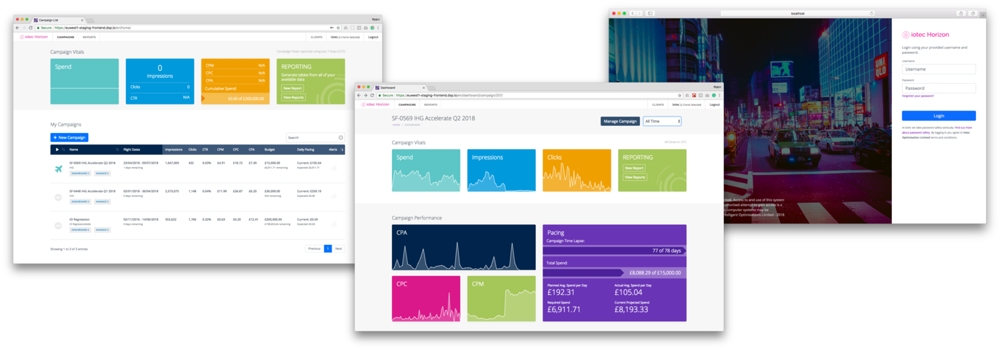
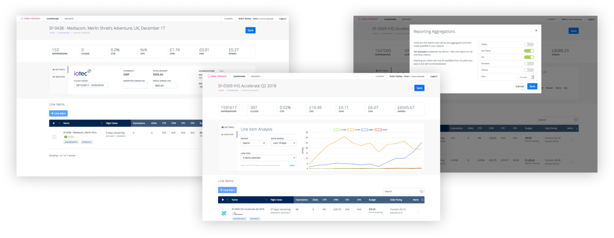
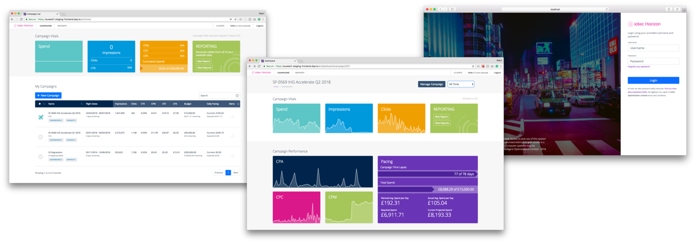
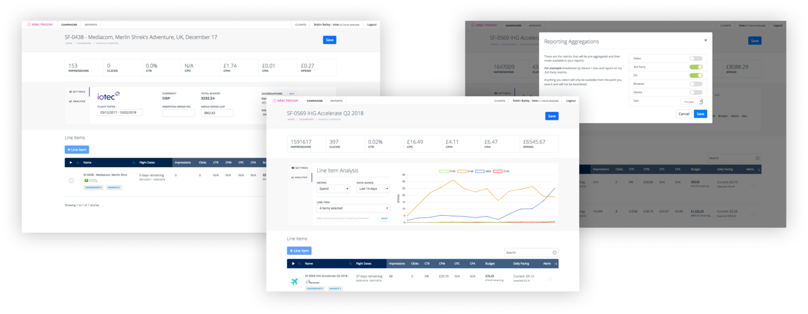

 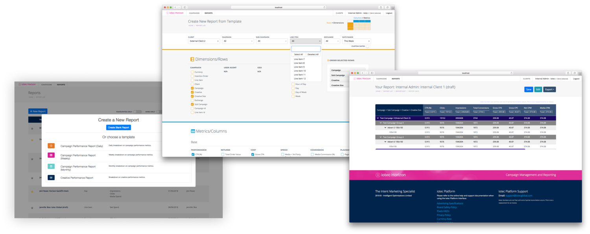
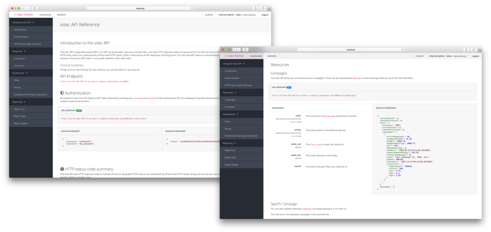
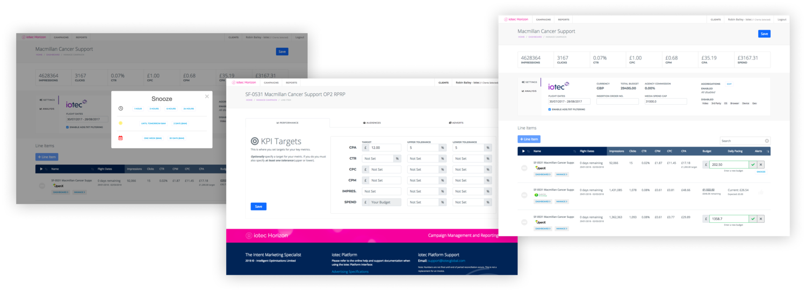
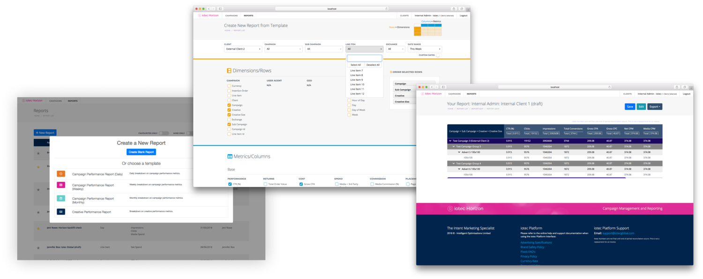
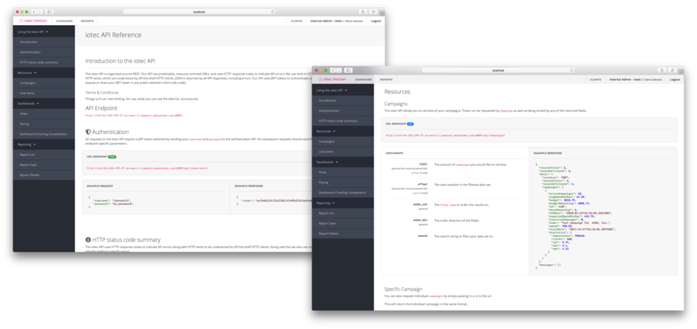
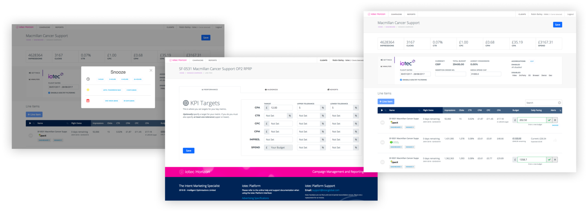
-
Thinking
-
Site Maps & User Flows
Redesigned the conceptual flow of the entire system with sensible and defined user workflows. New sitemaps with understandable and natural functional areas, allowing users to build up their campaign in a logical understandable fashion. This allowed for consistent user navigation and a component-based construction minimising redundant configuration and allowing for flexibility of creation order.

 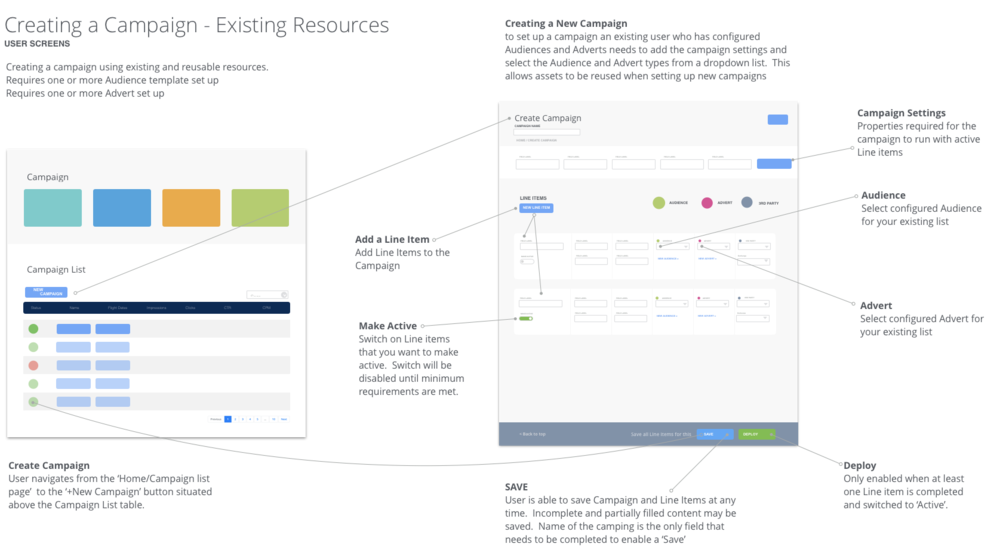
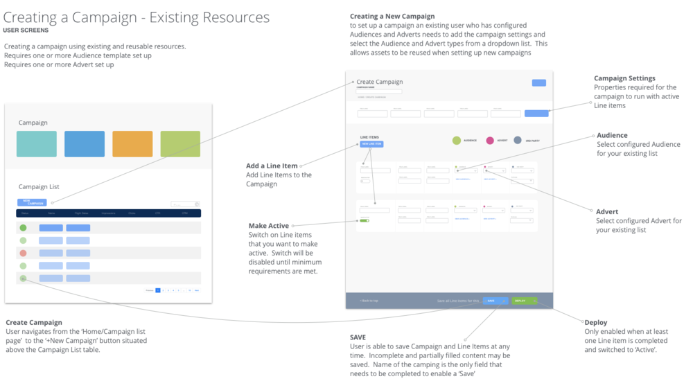

-
Site Maps & User Flows
-
Design Process
-
The design process consisted of several stages produced through design workshops in consultation with multiple user types. This allowed construction for different users requirements and feeding these back to other user groups and stakeholders. This enabled iterative design leading to a unified vision that guided the development and implementation process.
-
DESIGN PROCESS PART 1 (WIREFRAMES)
After initial functional flows and conceptual areas were determined, wireframes were produced to validate these. Merge technical functional areas into user story of practical UX focused flows. This allowed users to confirm that their specific requirements are fulfilled in a visual and easy to understand manner. These prototypes were also used to identify components in addition to giving a deeper consideration to technical implementation at an early stage. This process contributed greatly into planning out of work, identifyinng the critical path/blockers, as well as time estimates and work prioritisation.
-
Other Information
-
Download
Designed application concept, user interface, and user experience. Fully responsible for the implementation and programming of the final published app in Swift.
The best multi-workout personal trainer for iPhone. Follow the optimal regime of sets to reach your performance goals for push-ups, sit-ups, or squats. Track your progress and workouts through the extensive levels system to reach your ultimate goals, all in the most simply designed app of its kind. No gym equipment required. This three pronged approach works out each of your main body areas to give you the full Trifecta Workout.
Dribbble LinkedIn Twitter Email